Diagrams in Sphinx¶
installation and configuration¶
graphviz blockdiag nwdiag and actdiag¶
add the installed diagram modules to the extensions section in your conf.py
extensions = ['sphinx.ext.autodoc', 'sphinx.ext.graphviz', 'sphinx.ext.githubpages',
'sphinxcontrib.nwdiag', 'sphinxcontrib.rackdiag', 'sphinxcontrib.packetdiag',
'sphinxcontrib.seqdiag','sphinxcontrib.blockdiag','sphinxcontrib.actdiag']
installation¶
installing graphviz doesn’t work from pip install, you have to install it systemwide (pip doesn’t install a .dot binary for some reason.
sudo apt-get install graphviz
configuration¶
you need to autobuild it with the following configuration in your sphinx virtual environment if you want to use graphviz. For the network diagrams this is not required
sphinx-autobuild -b html -D graphviz_dot=/usr/bin/dot -H 127.0.0.1 -p 6666 ./ _build/html/
demonstration of diagrams¶
graphviz¶
 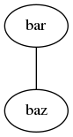
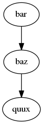
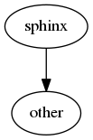
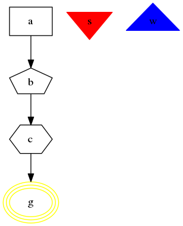
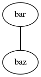
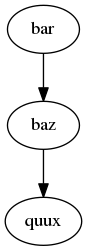
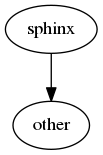
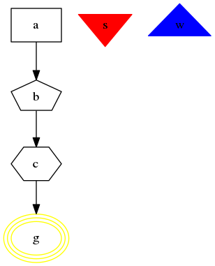


rackdiag¶
simple diagram¶
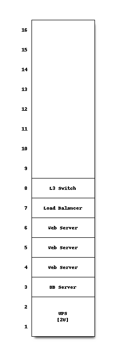
rack attributes¶

multiple units in rack-level¶

multiple racks¶

define na units¶
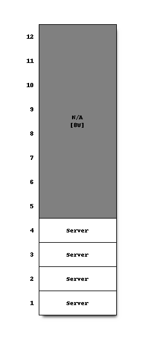
packetdiag¶

blockdiag¶
http://blockdiag.com/en/blockdiag/index.html http://blockdiag.com/en/blockdiag/attributes/index.html

node_width and node_height attribute to diagram¶
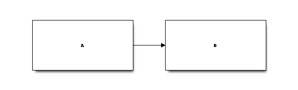
span_width and span_height attribute to diagram¶

default_fontsize attribute to diagram¶

default_shape attribute to diagram¶
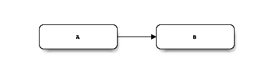
orientation attribute to diagram¶

default_node_color, default_group_color, default_linecolor and default_textcolor attribute¶
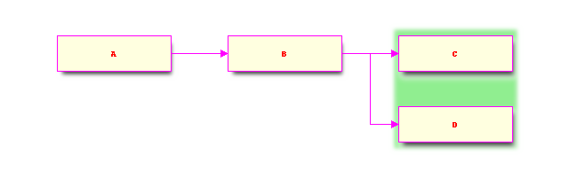
label attribute to nodes¶

style attribute to nodes¶

color attribute to nodes¶
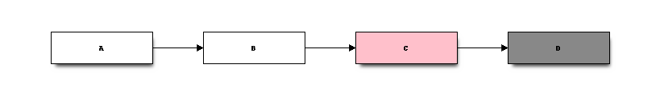
numbered attribute to nodes¶

shape attribute to nodes¶

background attribute to nodes¶
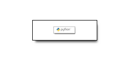
stacked attribute to nodes¶

description attribute to nodes¶
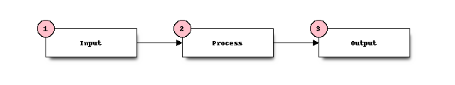
Icon attributes to nodes¶

color attributes to nodes¶
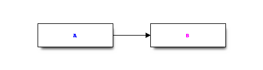
width and height attributes to nodes¶
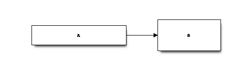
fontsize attributes to nodes¶
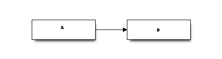
label attribute to edges¶

style attribute to edges¶
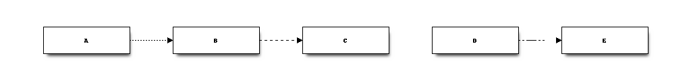
hstyle attribute to edges¶

color attribute to edges¶

dir attribute to edges¶

folded attribute to edges¶

text color attribute to edges¶
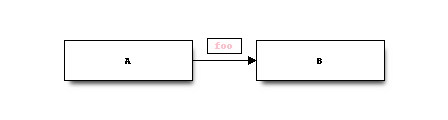
font size attribute to edges¶

thick attribute to edges¶

style attributes to nodes and edges¶

branched edges¶

direction of edges¶
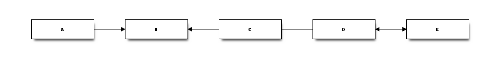
edge folding¶

shape of nodes¶

using stacked attribute¶
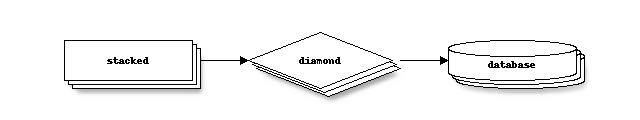
using dots shape¶

grouping nodes¶

font settings¶
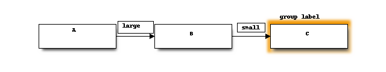
diagram attributes¶
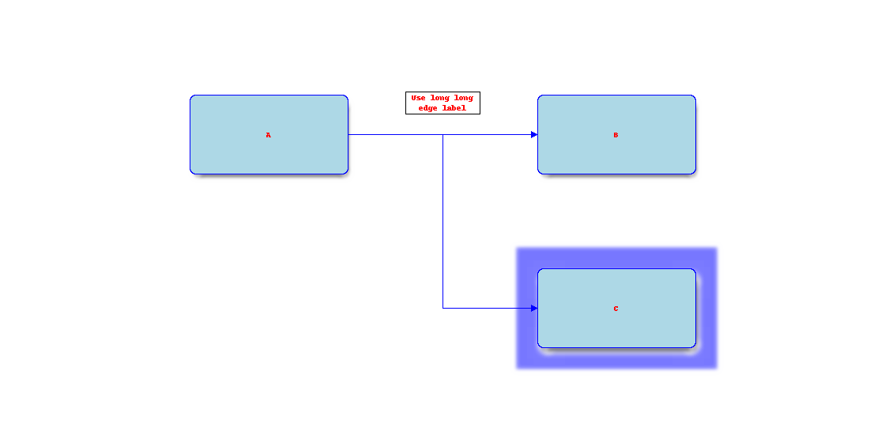
define classes¶

portrait mode¶
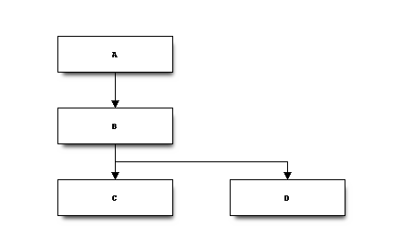
portrait group¶

simple diagram for master data manager¶

seqdiag¶
simple diagram¶
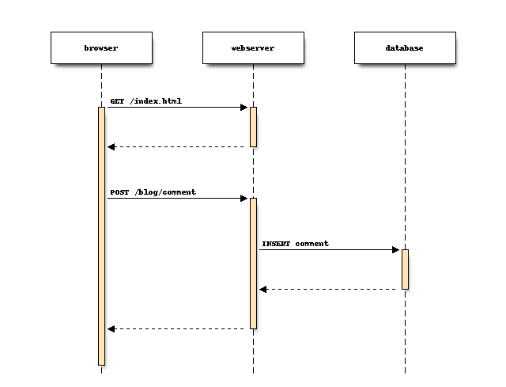
edge types¶
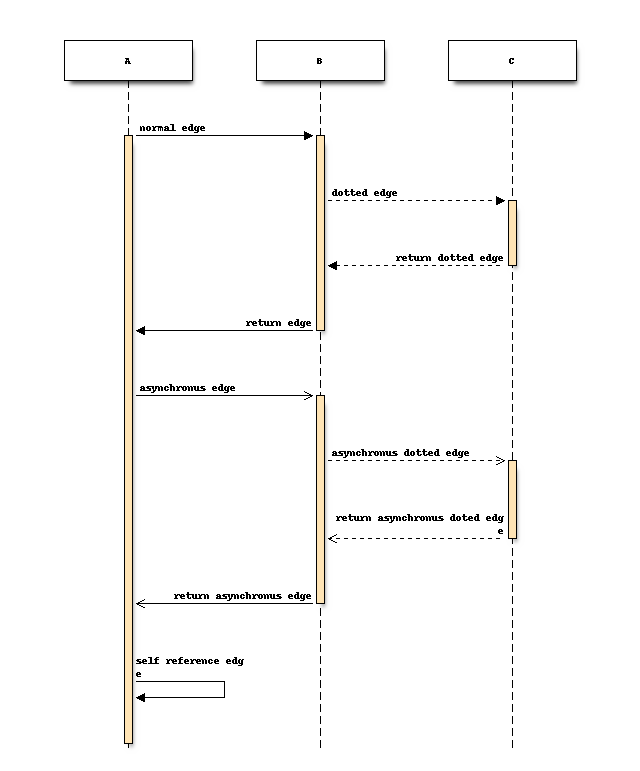
attributes of edges¶
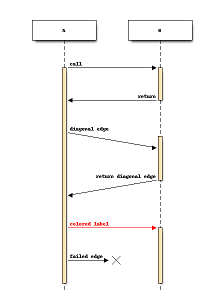
auto return edge and nested sequense¶

separators¶
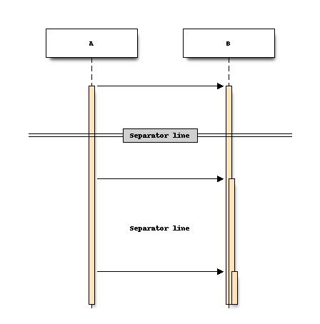
edge notes¶
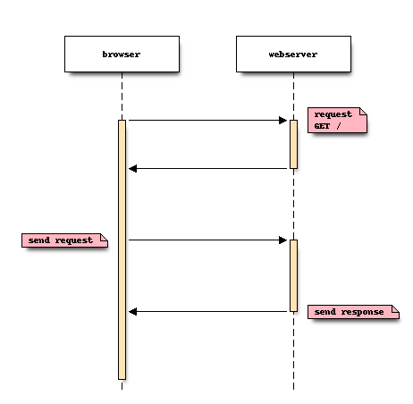
diagram attributes¶

TIPS: changing order of elements¶
If you want to changing order of elements, define elements you want to layout. seqdiag sorts elements by order they appear
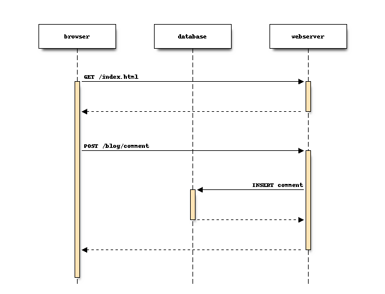